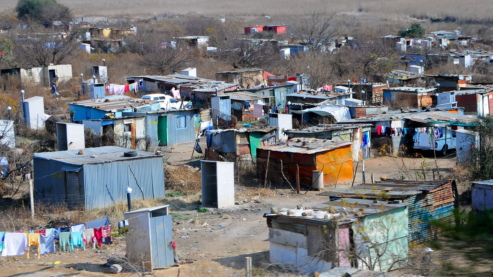
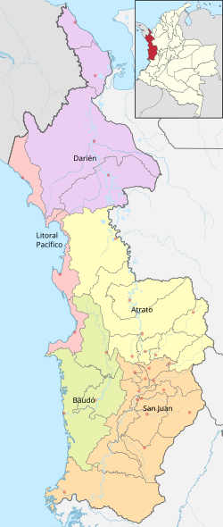

Explora la realidad
La pobreza es más que la falta de ingresos. Es la imposibilidad de satisfacer necesidades básicas como alimentación, salud, vivienda o educación. En el departamento del Chocó, esta realidad afecta a más del 67 % de su población, una cifra alarmante que refleja una desigualdad estructural histórica. El 43,5 % vive incluso en pobreza extrema, sin ingresos suficientes ni siquiera para una canasta básica alimentaria (DANE, 2023).
“Más que cifras, es una lucha diaria por vivir con dignidad. Aquí, tener agua potable o electricidad sigue siendo un lujo”.
El Chocó está dividido en cinco subregiones: Darién, San Juan, Atrato, Baudó y Pacífica. Aunque cada una tiene un gran potencial biodiverso, sus economías dependen en gran medida de actividades como la minería, la agricultura artesanal y la pesca. Pero los beneficios económicos no llegan a las comunidades locales (Cámara de Comercio del Chocó).
En 2023, el Índice de Pobreza Multidimensional reveló que el 37% de los habitantes del departamento sufre privaciones graves en educación, empleo, salud y condiciones de vivienda (DANE, IPM 2023). El acceso a servicios básicos sigue siendo limitado: muchas comunidades no cuentan con agua potable ni saneamiento adecuado.

La pobreza monetaria afecta a más del 67% de la población, mientras que el 43,5% vive con menos de $235.000 mensuales. Esto representa una grave crisis humanitaria en términos de salud, nutrición y calidad de vida (DANE).
“En mi comunidad, nadie tiene empleo formal. Vivimos del rebusque y de la tierra. Pero el Estado nunca llega”
— Testimonio anónimo, Medio Baudó.
Frente a esta situación, organizaciones y líderes comunitarios proponen planes de inclusión económica y social, centrados en fortalecer las capacidades locales. Se plantea apoyar el emprendimiento rural, mejorar la educación y ampliar la cobertura de servicios públicos. La acción coordinada del gobierno nacional y local, con participación comunitaria, es clave para reducir la pobreza (Procuraduría General de la Nación).
A pesar de las cifras devastadoras, el pueblo chocoano sigue resistiendo con dignidad. Proyectos de agricultura sostenible, radios comunitarias y educación digital emergen como señales de esperanza en territorios históricamente olvidados.
“No queremos asistencialismo. Queremos oportunidades reales para salir adelante”.
— Jóvenes Unidos del San Juan
Explorar la realidad del Chocó es comprender que la pobreza no es falta de talento o esfuerzo, sino de oportunidades. Este departamento no solo representa una deuda histórica, sino también un potencial inmenso de transformación social y económica. Darle la espalda es negar el futuro que aún se puede construir.